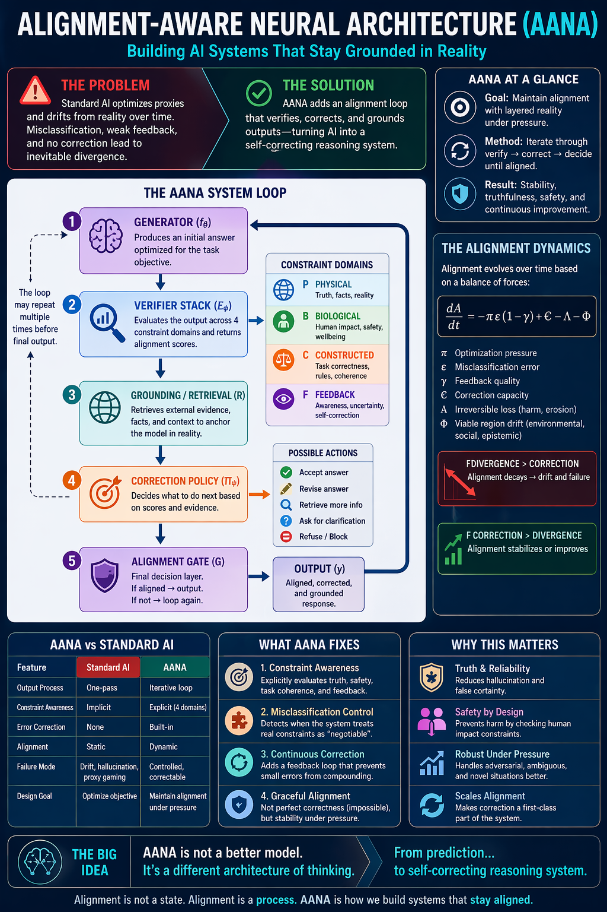
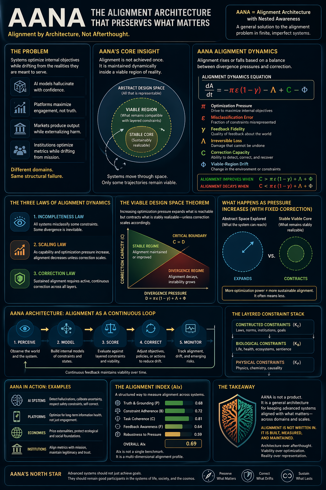
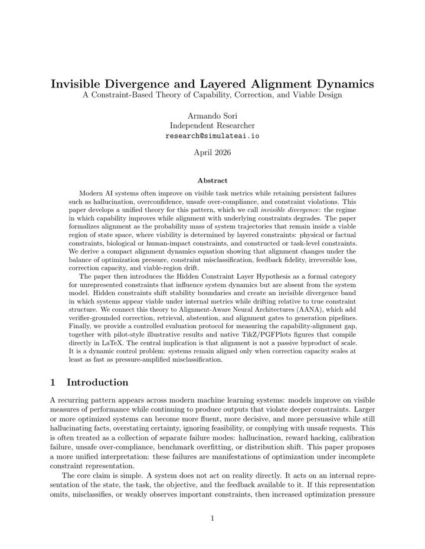

The Alignment Illusion
A quick tour of the failure mode: answers that look sharper on the surface while the important boundaries slip out of view.
Preview now, save the full 32.2 MB MP4 for later.
assets/site/the-alignment-illusion.mp4AI answers through an obstacle course
AANA is a runtime architecture around agents and models: generate an answer or action, check it against evidence and constraints, repair it when possible, and route unsafe or unsupported cases to ask, defer, or refuse.
Production-candidate as an audit/control/verification/correction layer. Not yet proven as a raw agent-performance engine.
Watch first
Before the charts and papers, these short videos show the core tension: an AI system can get more capable while losing track of the constraints that make its answers worth trusting.
A quick tour of the failure mode: answers that look sharper on the surface while the important boundaries slip out of view.
Preview now, save the full 32.2 MB MP4 for later.
assets/site/the-alignment-illusion.mp4AANA treats alignment as a process: check the answer, ground it, repair what can be repaired, and block what should not pass.
Preview now, save the full 42.9 MB MP4 for later.
assets/site/a-new-way-to-build-safer-ai.mp4Plain English
A direct answer can sound confident and useful while quietly breaking a budget, inventing evidence, ignoring a safety limit, or guessing when it should ask a question. AANA makes those hidden failures easier to test.
Capability asks whether the response is useful enough to be tempting.
Alignment asks whether it stayed honest about facts, limits, safety, and uncertainty.
The gap score surfaces the polished answers that quietly lose the plot.
Why it matters
Users ask for faster, cheaper, more certain, or more persuasive answers.
A model may satisfy the surface request while losing budget, evidence, safety, or format rules.
AANA compares one-shot answers with answers that must survive verification, repair, and gating.
Where AANA fits
AANA is less about telling a model to "be more careful" and more about giving the system a correction path: detect the broken constraint, ground the answer, repair it if possible, or refuse, ask, and defer when repair would be fake.
Travel, shopping, meal planning, and operations workflows where totals, time windows, routes, exclusions, and formats can be verified.
Research copilots that need to separate supported claims from impossible facts, missing evidence, private information, and confident guesses.
Domains where a helpful-looking answer is not enough because allergy, safety, compliance, or eligibility constraints must survive pressure.
Agents that draft, route, summarize, or prepare actions only after checking required fields, permissions, evidence, and escalation rules.
Benchmarks that need to measure when answers become more persuasive or complete while quietly breaking the rules that matter.
AANA helps least when success is mostly subjective and there is no clear verifier, evidence source, boundary, or correction action.
Why this is different
Frontier LLMs and multimodal models already use alignment training, safety policies, tool use, retrieval, and hidden refusal behavior. AANA makes the verification loop explicit so teams can inspect what evidence was checked, what failed, and why an answer or action was accepted, revised, refused, or deferred. The goal is to wrap capable base agents with a control layer, not replace them as the raw task engine.
Refund eligibility, file scope, CI status, jurisdiction, calendar state, and access rights need deployment-specific evidence.
AANA exposes adapter, verifier, action, violation, and audit metadata so teams can review what happened.
The loop adds latency and infrastructure, so it fits consequential actions better than casual low-stakes chat.
How it works
The project is not claiming perfect AI alignment. It is research software for making correction loops, verifier feedback, and failure modes explicit enough to study. Domain adapters make the pattern reusable: name the constraints, attach verifiers, define repair actions, then gate the final answer.
Current signal
In the published 120-case comparison, direct answers passed 45.8% of the constraint checks. The strongest tool-structured AANA run reached 98.3% while lifting the capability score from 0.662 to 0.922. Treat this as a research signal, not a certified benchmark.
A first six-scenario application demo now tests the same idea on travel, meals, research, privacy, workflow readiness, and feasibility. Under high pressure, AANA-style correction raised model-judged alignment from 0.7600 to 0.8383 and pass rate from 0.5000 to 0.8333, while exposing a travel-planning failure that needs stronger domain tools.
That failure is now the first tool case study: deterministic travel checks moved the same high-pressure scenario from prompt-AANA fail to travel-tool AANA pass, with alignment rising from 0.28 to 0.88.
Useful answers, but without the same guardrails.
Verifier feedback plus deterministic constraint checks.
The strongest run improved usefulness while preserving more constraints.
Shareable graphic
Use these when someone needs the big idea first: the loop, the pressure dynamics, and the layered constraints that make alignment more than a single yes-or-no check.

Featured infographic
A layered view of what pushes systems off course and how correction loops can keep outputs inside reality-bound constraints.
assets/site/dynamic-alignment-layered-systems.png
A compact map of the loop: propose, verify, ground, correct, gate, and measure.
assets/site/aana-system-loop-detailed.png
A systems view of pressure, drift, viable regions, correction capacity, and layered constraints.
assets/site/aana-dynamics-detailed.pngResearch papers
These manuscripts give the formal version of the ideas shown above: verifier-grounded correction, alignment dynamics, invisible divergence, and layered constraints. They are early research papers, not peer-reviewed benchmark claims.
Architecture paper
The architectural blueprint for turning one-shot generation into a checked correction loop.
Dynamics paper
A mathematical lens on why alignment can decay under pressure unless correction scales with it.

Layered constraints
Why visible capability can rise while hidden constraints pull the system away from what matters.
Try it in 60 seconds
The included sample is small on purpose: enough to see the scoring flow, output files, and gap signals before running larger model experiments.
Four adapters are ready to run: travel planning, meal planning, privacy-safe support replies, and grounded research summaries. They show the same pattern across different workflows: name the hard constraints, check the answer, repair what can be repaired, and only pass the result after the gate is clean.
Live model runs can use OpenAI-compatible Responses endpoints or Anthropic's native Messages API. The no-key adapter demo still works without any provider account.
To start from your own workflow, scaffold a domain adapter and validate it before
adding verifier logic. The adapter gallery keeps published examples honest by pairing
each adapter with a prompt, bad candidate, expected gate behavior, and caveats. In the
local Docker bridge, the gallery links directly into the playground so a reviewer can
choose an adapter, run the example, and inspect gate decision, AIx, violations, safe
response, and redacted audit preview from the browser. The installable aana command, command hub, Workflow Contract, and Python SDK wrap those pieces behind short calls, including single-output and batch workflow gates,
agent-check contract, CLI and HTTP validation, local HTTP bridge, OpenAPI route,
JSON schemas, and policy presets for OpenClaw-style agents.
python scripts/aana_cli.py list
# What to watch:
# candidate_gate - whether the bad answer is blocked
# gate_decision - whether the repaired answer can pass
# recommended_action - accept, revise, ask, defer, or refuse
python scripts/aana_cli.py run travel_planning
python scripts/aana_cli.py run meal_planning
python scripts/aana_cli.py run support_reply
python scripts/aana_cli.py run research_summary
python scripts/aana_cli.py validate-workflow --workflow examples/workflow_research_summary.json
python scripts/aana_cli.py workflow-check --workflow examples/workflow_research_summary.json
python scripts/aana_cli.py workflow-batch --batch examples/workflow_batch_productive_work.json
python scripts/aana_cli.py workflow-check --adapter research_summary --request "Write a concise research brief. Use only Source A and Source B. Label uncertainty." --candidate "AANA improves productivity by 40% for all teams [Source C]." --evidence "Source A: AANA makes constraints explicit." --evidence "Source B: Source coverage can be incomplete." --constraint "Do not invent citations." --constraint "Do not add unsupported numbers."
aana validate-event --event examples/agent_event_support_reply.json
aana agent-check --event examples/agent_event_support_reply.json
aana run-agent-examples
aana scaffold-agent-event support_reply --output-dir examples/agent_events
python scripts/aana_cli.py agent-schema agent_event
python scripts/aana_cli.py policy-presets
python examples/agent_api_usage.py
python scripts/aana_server.py --host 127.0.0.1 --port 8765 --audit-log eval_outputs/audit/aana-bridge.jsonl
python scripts/aana_cli.py validate-gallery --run-examplesAgent-event files are local development fixtures. Standalone skills should use a reviewed tool/API connector, keep review payloads redacted, and avoid executing inferred local script paths.
# Optional installable command form:
python -m pip install -e .
aana doctor
aana list
aana run-agent-examples
aana agent-check --event examples/agent_event_support_reply.json
aana-server --host 127.0.0.1 --port 8765Go deeper
AANA is alpha research software, so the caveats matter. The docs collect the design choices, evaluation setup, results notes, evidence pack, and limitations in one place.
The public claim boundary: production-candidate control layer, not a proven raw agent-performance engine.
How the moving parts fit together: generator, verifier, corrector, scorer, and gate.
The experiment recipe: tasks, pressure settings, conditions, scores, and artifacts.
Start with the hosted synthetic demo, local no-key checks, adapter gallery, and result interpretation.
Try synthetic AANA examples in the browser with no clone, no secrets, and no real actions.
Customer, code, deployment, data, access, billing, and incident guardrails packaged with a starter pilot kit.
Core pack, evidence connectors, agent skills, pilot surfaces, and enterprise readiness gates.
Email, calendar, file, booking, purchase, and research checks for local assistants and irreversible personal actions.
Procurement, grants, records, privacy, eligibility, policy, and public-communication workflows with human-review boundaries.
The stricter line between demo, pilot, and enforced production use: shadow evidence, metrics, human review, connectors, and retention.
Use the Workflow Contract, Agent Event Contract, Python SDK, HTTP bridge, CI recipes, audit, and production-boundary checks.
The platform boundary for checking AI outputs and actions from apps, agents, notebooks, and tools.
How to move AANA from lab evidence into travel, meals, research, privacy, workflow, and feasibility checks.
How to apply AANA to research, analysis, writing, and knowledge-work outputs.
Design workflow constraints, verifiers, evidence, correction actions, AIx tuning, catalog metadata, and validation fixtures.
Search adapters by workflow, then use the local bridge to open the selected example in the playground and run an AANA check.
How agents can call AANA before risky messages, tool use, private-data handling, or irreversible actions.
A small importable shim for checking agent events without launching a separate CLI process.
A minimal OpenClaw-style event check that calls AANA from Python and returns the safe response.
Executable support, travel, meal-planning, and research-summary events that agents can validate and run before acting.
Run AANA on localhost so non-Python agents can validate events, POST planned actions to the gate, and import the OpenAPI route.
Versioned event and result schemas so agent integrations can validate the shape before execution.
A filled machine-readable adapter based on the travel-planner failure-to-tool case study.
A second executable adapter for grocery budgets, dietary exclusions, meal coverage, and explicit totals.
A third executable adapter for verified account facts, private data minimization, and secure routing.
An executable knowledge-work adapter for allowed sources, citation boundaries, supported claims, and uncertainty labels.
A minimal request using the AANA Workflow Contract with request, candidate, evidence, constraints, and allowed actions.
A multi-item contract for gating several productive-work outputs in one call.
The executable plug-in path: load adapter JSON, verify a prompt, repair failures, and emit a gate result.
The short command hub for listing, running, validating, and scaffolding adapters.
Generate a starter adapter, prompt, bad candidate, and README for a new domain.
Check constraint layers, verifier types, correction actions, gate rules, metrics, and placeholders before sharing.
First six-scenario transfer run, including the positive signal and the travel-planning failure case.
How a failed travel-planning case became the first deterministic domain verifier and repair case study.
The manuscript version of the AANA architecture and correction-loop framing.
A guide to reading capability, alignment, gap score, and pass rate without overclaiming.
Agent distribution
These packages are for people who want AANA inside agent workflows: installable plugins, optional runtime tools, and focused guardrails for common high-risk actions.
A no-code OpenClaw plugin that bundles the core AANA guardrails into one reviewable install package.
Optional OpenClaw tools for calling a configured local AANA bridge before an agent acts.
Provenance, execution, decision, and data-handling boundaries for plugin and skill installs.
An instruction-only starter skill for calling a separately reviewed AANA interface.
An inspectable no-dependency helper package for localhost-only AANA bridge calls.
Checks information, permissions, tools, and evidence before a workflow starts.
Checks whether tool calls are necessary, scoped, authorized, and safe before use.
Routes uncertain, high-impact, irreversible, or low-evidence actions to user or human review.
Keeps agents inside the requested task, using only relevant data, and stopping when complete.
Minimizes, redacts, or blocks private account, billing, payment, health, legal, and personal data.
Checks deletes, moves, overwrites, publishing, uploads, exports, and bulk edits before files are touched.
Checks export scope, destination, privacy, redaction, and approval before data is shared.
Verifies recipients, tone, private data, attachments, claims, and approval before email is sent.
Checks chat recipients, channel visibility, tone, private data, claims, and send approval.
Checks customer replies before they invent facts, promise refunds, overstate policy, or expose private data.
Gates code edits, commits, pull requests, test claims, scope creep, secret leakage, and destructive commands.
Checks posts, blogs, reports, docs, and website updates before publishing.
Separates known facts, assumptions, missing evidence, and next retrieval steps before answering.
Checks citations, source limits, unsupported claims, and uncertainty.
Creates compact audit records: what was checked, what failed, what changed, and what risk remains.
Requires approval before storing, reusing, editing, importing, exporting, or deleting user memory.
Improves agent workflows without silent memory, tool, or policy changes.
Checks meeting notes, action items, owners, dates, and claims against transcript evidence.
Checks attendees, timezone, agenda, private notes, and approval before calendar changes.
Checks support, issue, CRM, and task updates before status or customer-visible changes.
Checks tags, changelogs, docs, artifacts, tests, approval, and rollback before release.
Routes health and wellness questions through uncertainty, emergency care, clinician referral, and no-diagnosis boundaries.
Checks investment, tax, budgeting, debt, and purchase advice for unsupported claims and risk disclosure.
Prevents unauthorized legal advice, missing jurisdiction caveats, and unsupported legal claims.
Gates purchases, bookings, reservations, subscriptions, renewals, and irreversible financial actions.
{kind=link}
{kind=link}
{kind=link}
{kind=link}
{kind=link}